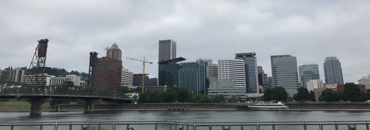
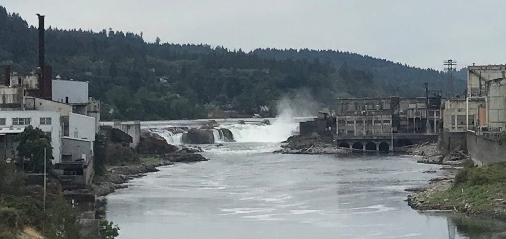
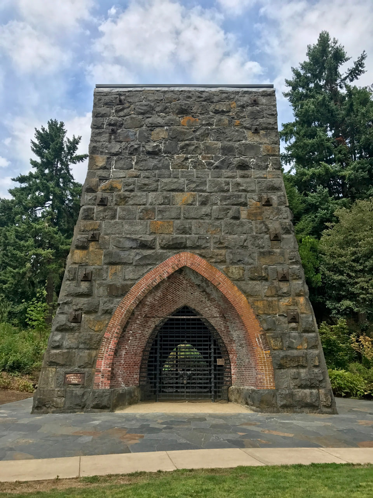
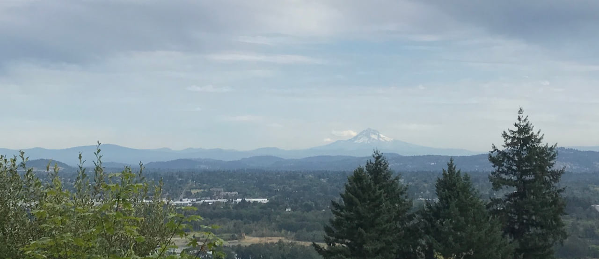

I got into Portland last night at a time appropriate for a late dinner. The Lyft driver dropped me off at the Airbnb — how millennial! — after sharing some secrets of the city: “the bicyclists are assholes, but the women are nice to look at.” I dropped my stuff in the room, and went out looking for food. Late dinner was a vegan barbecue-and-slaw sandwich: not entirely my choice, more of a lesser of two evils situation. Weed smoke was easily discernible in the air. And that was my introduction to Portland.
The city is bisected into a west half and an east half by the Willamette River, which I still do not, and never will, pronounce correctly. Many bridges offer cars and people alike the chance to cross it near downtown and other cities close by. More relevant to me, there are bike paths around the river that loosely combine into a namesake trail (10MB PDF), almost 30 miles in total. I woke up and skateboarded a mile and change west to start at the recommended trailhead near the northeast corner, and followed it clockwise.
Immediately, the loop runs right next to the river on its eastern bank. It’s a brief tour of the industrious side of Portland: factories, warehouses, and garages. The city skyline beckons from across the river. Also immediately, you pass through a tent city that’s both impressive in scope and depressing for it. This stretch is very nice otherwise, catching cold gusts off the water and temporary echoes as you cruise under the labyrinth of overpasses. The bridge closest to the science museum, naturally, has one of those acoustic mirrors within its support structures on either side of the river. No one was across from me when I passed, sadly.
Two designated bike paths make up the next large segment, the Springwater Corridor and the Trolley Trail. These are nestled between a single train track and some foliage buffers, rather than running right along the river. I saw many many bikes and a few joggers, almost all going in the opposite direction as me. It was the perfect opportunity to put in some headphones and listen to sports heads talk about yesterday’s Kyrie Irving trade, without worry of collisions or intersections. What few intersections there were had their own miniaturized STOP signs for the bike path. I ignored them all!
I crossed the river for the first time near Oregon City, the final stop on The Oregon Trail. The loop was supposed to pick up on Main Street, which was under construction to make room for what looked like gentrification condos. I made two complete confused circles around a shopping center before picking up the trail, crossing the river a second time and spying waterfalls in the distance.
This was roughly halfway, and in retrospect, the far easier and more picturesque half was behind me. That second bridge merged onto state highway 43, one to two lanes of traffic in each direction with a dedicated bike lane in lieu of a shoulder. It brought to mind state highway 17 in South Carolina, with traffic zooming close by at highway speeds and the occasional semi truck. Where I could, I got onto a sidewalk. And more often than not, I found myself walking. Because this second half of the loop — the western half — is almost always on an incline. And these aren’t gradual inclines: the uphills zap any skating momentum and energy, and the downhills generate more speed than I was comfortable with, that close to traffic.
That’s not to say there weren’t highlights. There’s a dedicated paved trail set aside from the road on the outskirts of Mary S Young Park. The asphalt was smooth as glass, and it appeared to be level ground, safe to skate freely. However, when I crossed the threshold of the park and hit this path, it was as if my board hit one of those Mario Kart boost pads. Obviously, it must have been at a slight decline, but I didn’t have to kick and kept gaining speed as if I was on a steep downhill. And then before hitting downtown Lake Oswego, the George Rogers Park trail brought me to an old iron furnace — the first of its kind on the west coast! The loop did take me straight through the city of Lake Oswego, which felt like a ski village: crisp clean air, charming shops for upscale brands, and an abundance of affluent-looking white folks.
{kind=link}
And then for what seemed like forever after that, the loop continued ascending and descending a frustratingly diverse Oregon topography. I had walked through the bustling downtown because it was crowded with people, and I kept walking on the following bike lanes and sidewalks to avoid tiring out or bailing at high speed. To be fair, this stretch was through a gorgeous forest of Pacific Northwest trees. It almost felt like I was in a lonely reboot of Twilight. When I reached a stopping point that I was certain to be near the end (it wasn’t), I was rewarded with a great view of the distant Mount Hood.
A couple more miles downhill and out of the forest, one or two passes over or under major interstates, and I was back in Portland. The western half this time, clearly the downtown and even through Portland State University’s campus at first. More walking to avoid colliding with pedestrians, and I ended at the other side of the river from where I started. The western bank is designated a city park with the requisite green space, and the nearby Mill Ends Park standing watch.
If I had to do it again, I’d only do the trails on the eastern half, skate over the Hawthorne Bridge, and stick to the paths within the waterfront park. That’s not to say I didn’t wholly enjoy the rest of it! Many of those parts Keep Portland Weird, as they say.